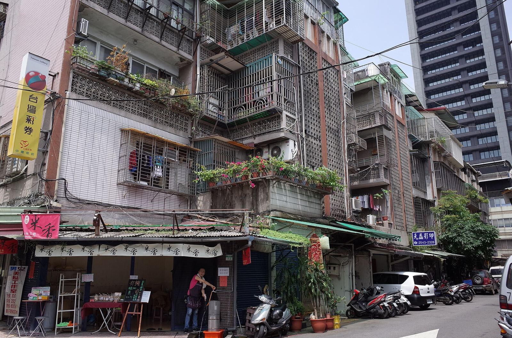
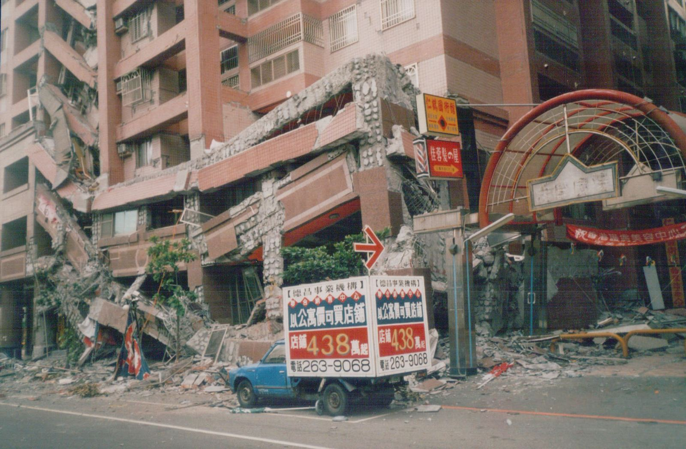

雙老健檢優先指數
市政 debug松
我們
市政 debug松
我們

選行政區
全臺北
前 1%
前 1%
這個
這個
想知道
我們
市府
本研究：
專業
依評估
原題
TAIPITwin-Ageing Inspection Priority Index
先查哪些
條長
原題
0.1–37.6每 100
設計年代、
原題：
×1.00–1.50依排名，
周邊 65 歲以上比例，
原題：
×1.00–1.50對上清冊才加
門牌
原題：
×1.00–1.50潛勢
門牌所在
原題：
每一項
結構
原始
優先
這個
民國
所在
門牌
門牌
接好
結構
圖中分
這仍是
中度
當年
設計
每 100
以下
結構
三項
全體
全體
各組
359.4這一棟
單一設定
剛才
我們
依最後
前 1% 候選其餘
前 1%，
前 1%
分數
剛才的算例 359.4 分，高於 329.6 分的前 1% 線，
使照記載
全是
中山、
第一步
各棟高度
這個
民國
民國
臺北盆地
臺北
這批
再分成
| 哪一種 | 棟數 | 集中在 | 樓層 | 周邊長者比例 | 現場 |
|---|---|---|---|---|---|
| 門牌 | 16 棟1,085 戶 | 中山 6 大同 5 | 8–10 層 10 11 層以上 6 | 28% | 救災 |
| 液化 | 259 棟11,186 戶 | 中山 156 大同 24 | 8–10 層 64 11 層以上 195 | 27% | 區域 |
| 其餘： | 148 棟6,694 戶 | 大安 40 萬華 40 | 8–10 層 36 11 層以上 112 | 31% | 住的人： |
423 棟
需核對的，
市府
前 1%
材料
未查到
這些
市府

美濃
使照看不出
從原題
前 1%
名單
這批
這份
下一步
主報告到
日本
日本以 1981
TAIPI結構
日本醫院、
TAIPI使照只有
日本緊急
TAIPI救援
日本不放進建物
TAIPI長者
日本上述
TAIPI液化
其他
來源：國土
候選集中
不過，
樓層
受損
名單
把 8 層以上
其他

另一個檢查：查不到
同一類
長者
三項
示意：
沒有零分。有 10
顏色
共有
依行政區
| 里 | 前 1% 候選（棟） |
|---|---|
| 三愛里 | 1 |
| 光復里 | 5 |
| 幸市里 | 3 |
| 幸福里 | 8 |
| 文祥里 | 1 |
| 東門里 | 2 |
| 板溪里 | 1 |
| 梅花里 | 7 |
| 永功里 | 1 |
| 螢圃里 | 2 |
| 頂東里 | 2 |
| 黎明里 | 10 |
| 里 | 前 1% 候選（棟） |
|---|---|
| 南芳里 | 1 |
| 大有里 | 5 |
| 延平里 | 5 |
| 建泰里 | 3 |
| 星明里 | 1 |
| 朝陽里 | 7 |
| 民權里 | 3 |
| 永樂里 | 6 |
| 玉泉里 | 5 |
| 老師里 | 1 |
| 蓬萊里 | 1 |
| 里 | 前 1% 候選（棟） |
|---|---|
| 中原里 | 11 |
| 中吉里 | 7 |
| 中央里 | 9 |
| 中山里 | 16 |
| 中庄里 | 1 |
| 力行里 | 12 |
| 圓山里 | 1 |
| 埤頭里 | 1 |
| 康樂里 | 11 |
| 復華里 | 14 |
| 恆安里 | 3 |
| 晴光里 | 11 |
| 朱園里 | 20 |
| 朱崙里 | 2 |
| 松江里 | 2 |
| 正得里 | 16 |
| 正義里 | 11 |
| 民安里 | 9 |
| 聚盛里 | 3 |
| 聚葉里 | 1 |
| 興亞里 | 11 |
| 行政里 | 1 |
| 集英里 | 7 |
| 里 | 前 1% 候選（棟） |
|---|---|
| 中崙里 | 1 |
| 中正里 | 2 |
| 中華里 | 3 |
| 吉祥里 | 3 |
| 安平里 | 1 |
| 復勢里 | 2 |
| 復盛里 | 1 |
| 慈祐里 | 1 |
| 敦化里 | 1 |
| 新聚里 | 2 |
| 東光里 | 3 |
| 東勢里 | 3 |
| 民有里 | 1 |
| 精忠里 | 5 |
| 里 | 前 1% 候選（棟） |
|---|---|
| 仁愛里 | 9 |
| 仁慈里 | 1 |
| 住安里 | 1 |
| 光信里 | 1 |
| 光武里 | 4 |
| 古莊里 | 1 |
| 和安里 | 5 |
| 建倫里 | 3 |
| 德安里 | 5 |
| 敦安里 | 1 |
| 昌隆里 | 1 |
| 正聲里 | 6 |
| 民炤里 | 1 |
| 民輝里 | 4 |
| 福住里 | 1 |
| 群賢里 | 1 |
| 義村里 | 1 |
| 華聲里 | 2 |
| 誠安里 | 4 |
| 車層里 | 3 |
| 通安里 | 1 |
| 龍圖里 | 2 |
| 龍泉里 | 1 |
| 龍陣里 | 4 |
| 龍雲里 | 1 |
| 里 | 前 1% 候選（棟） |
|---|---|
| 仁德里 | 1 |
| 富民里 | 2 |
| 富福里 | 2 |
| 忠貞里 | 19 |
| 新忠里 | 10 |
| 新起里 | 1 |
| 福星里 | 8 |
| 糖廍里 | 1 |
| 綠堤里 | 1 |
| 萬壽里 | 8 |
| 西門里 | 5 |
| 青山里 | 1 |
| 里 | 前 1% 候選（棟） |
|---|---|
| 中興里 | 2 |
| 興隆里 | 2 |
| 里 | 前 1% 候選（棟） |
|---|---|
| 葫東里 | 1 |
| 葫蘆里 | 4 |
| 里 | 前 1% 候選（棟） |
|---|---|
| 建民里 | 1 |
建物
即使是
公開
主文
10,800
這一頁用到
| 資料 | 粒度 | 版本 | 用在哪裡 | 授權 |
|---|---|---|---|---|
| 計分 | ||||
| 臺北市 | 每張 | 歷史版 | 結構 | OGDL v1 |
| 一般 | 建物 | 2025 年 12 月 | 結構 | 引用 |
| 建築物 | 震區： | 111 | 臺北盆地 | 法規， |
| 統計區 | 每個 | 113 年 12 月 | 長者 | OGDL v1 |
| 最小統計區圖內政部統計處 | 每個 | 2015 年界線 | 長者 | OGDL v1 |
| 臺北市 | 每個里 | 115 年 9 月 | 長者 | OGDL v1 |
| 臺北市 | 每條 | 1150730 版， | 救援加成 | OGDL v1 |
| 臺北市 | 每段 | 2024 年 8 月 | 救援加成 | OGDL v1 |
| 臺北市 | 高、中、 | 2016 | 液化加成 | OGDL v1 |
| 定位與查詢 | ||||
| 臺北市 | 每個門牌點 | 2026 年 10 月 | 各項 | OGDL v1 |
| 村里界 | 每個 | 115 年 8 月 | 里查詢、 | OGDL v1 |
| 邀請前核對 | ||||
| 臺北市 | 每個 | 2026 年 10 月 | 有沒有 | OGDL v1 |
| 可輔導 | 每張使照 | 115 年 | 未報備 | 機關 |
| 臺北市 | 每段 | 2026 年 | 對照 | 公開圖台 |
| 延伸 | ||||
| 臺北市 | 每個 | 2026 年 10 月 | 公辦都更的下一環 | OGDL v1 |
| 20160206 | 每棟 | 2018 年 12 月 | 一樓 | 依資料庫 |
| 20180206 | 每棟 | 2019 年 1 月 | 軟弱層 | 依資料庫 |
| 九二一大 | 南投縣 | 2001 年 | 各年代 | 機關 |
標示
會公開
「受損」指什麼？這份
地圖
高齡
一樓
使用
為什麼
我住的公寓
這比